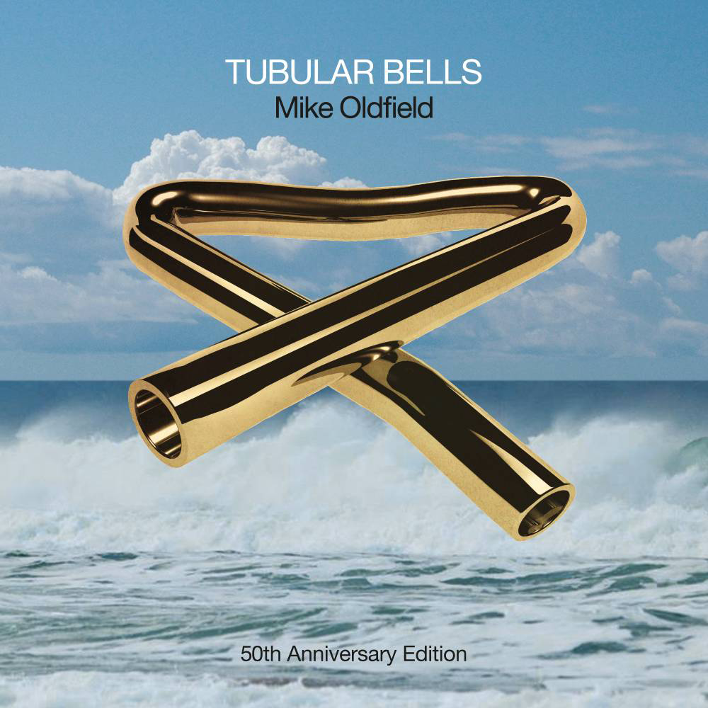

Tubular Bells 50th Anniversary

In 1973, seven years before I was born, an album was launched from a largely unknown artist of Mike Oldfield by a then-unknown label of Virgin Records which launched a world-wide phenomenon, most famously with excerpts being featured in the film The Exorcist released the same year. Tubular Bells led to more albums from Mike Oldfield, and it was in 1997 where the release of a compilation album called XXV which celebrated the 25th years of Mike Oldfield's work was my first impression of this amazing artist. Throughout my childhood and early teens I had struggled to find music I liked, there was no Spotify as the idea easily listening to music was years away so the only options were on the radio or the television and I had missed the times that Mike Oldfield's music was featured there, although little did I know that I'd probably heard his rendition of the Blue Peter theme or In Dulci Jubilo playing in the shops near Xmas. I'd not found anything I liked until I discovered Babylon 5 in the early 1990's where Christopher Franke had composed such wonderful music to and I really liked that style of music and was my very first Compact Disc and it was through that and being able to use the world wide web that I found similar music that people had created using the MIDI format, a long way from MP3 and discovered the work of Mike Oldfield and realised I'd found what I was looking for, the music that I liked and when I saw the XXV album in 1997 that started my collection of Mike Oldfield's work, of which I bought every other album he released before and since.
In 2023 it is the fiftieth anniversary of the release of Tubular Bells, which is being marked with an official release of a Tubular Bells 50th Anniversary Edition which of course was an instant pre-order. However the jubilation of this edition containing a preview of Tubular Bells 4 which was started in 2018 and had always wondered what had happened to that was countered by the news that only a preview of this existed and 2018 marked the retirement of Mike Oldfield releasing music. I went from being so happy to see something new but also sad that there will never be anything new, although in the music business you should never say never! This year I attended the Mike Oldfield's Tubular Bells The 50th Anniversary Celebration at the Sage Gateshead in February, although the man himself was not there, it was my very first taste of his music live in person and it was incredible and also was my very first concert, I'll always regret I missed the concerts where Mike Oldfield was performing in person, and also that I'll now never see one, but know that experience of seeing it there will be something I'll always be pleased I at least did instead. I look forward to getting to hear that part of Tubular Bells 4 knowing that's the last I may hear of his music. I know his impact on British culture cannot be understated as well as being a significant part of the opening of the London 2012 Olympic Games but to me, he opened my ears to the music that I still listen to this day, which helps me focus or relax or just to watch the concerts I have from time-to-time and think of the impact Mike Oldfield had on me, and so many others and hope that others discover his music, which you can do with Spotify and hopefully on the 75th Anniversary, 100th Anniversary and beyond his work will still be discovered.